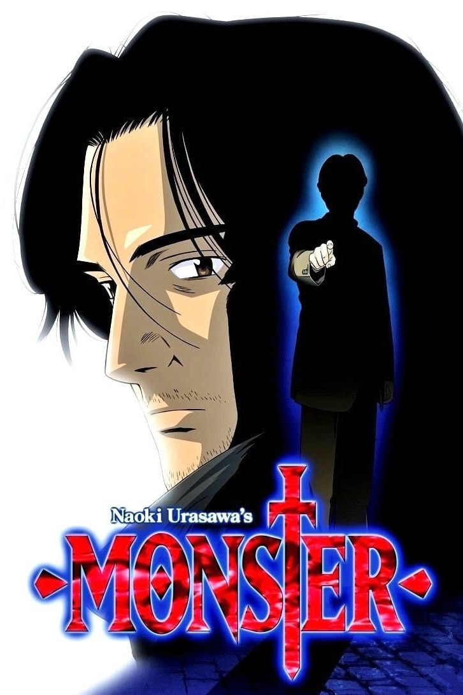

"Death Note" is a Japanese manga and anime series written by Tsugumi
Ohba and illustrated by Takeshi Obata. The story revolves around Light
Yagami, a highly intelligent high school student who discovers a
mysterious notebook called the Death Note. The Death Note has the power
to kill anyone whose name is written in it, as long as the writer has
the person's face in their mind. Motivated by a desire to eliminate
criminals and create a utopia free of wrongdoing, Light begins using the
Death Note to carry out vigilante justice. However, his actions attract
the attention of law enforcement and the enigmatic detective known only
as "L." This sets off a high-stakes cat-and-mouse game between Light and
L, as they engage in a battle of wits to outsmart each other. The series
explores complex moral and ethical questions as Light grapples with the
consequences of playing god and the impact of his actions on society.
Themes of power, justice, and the fine line between good and evil are
central to the narrative. "Death Note" is celebrated for its
psychological depth, suspenseful plot twists, and the intellectual duel
between its two brilliant protagonists, making it a standout work in the
psychological thriller genre.
Monster

"Monster" is a psychological thriller anime based on the manga by Naoki
Urasawa. The story follows Dr. Kenzo Tenma, a highly skilled and
compassionate neurosurgeon in Germany. When faced with a moral dilemma,
Tenma chooses to save the life of a young boy named Johan Liebert
instead of the mayor, a decision that alters the course of his life. As
Tenma rises through the medical ranks, a series of mysterious and
gruesome murders unfold, and he discovers that Johan, the boy he saved,
is connected to these heinous crimes. Realizing the consequences of his
choice, Tenma sets out on a quest to stop Johan and unravel the dark
conspiracy surrounding the boy's past. "Monster" explores themes of
morality, guilt, and the consequences of choices. It delves into the
psychological depths of its characters, particularly the enigmatic
Johan, as Tenma tries to understand the nature of evil and redemption.
The series is celebrated for its intricate plot, complex characters, and
thought-provoking narrative, creating a suspenseful and intellectually
engaging experience for viewers.
Steins Gate
"Steins;Gate" is a Japanese visual novel, anime, and manga series that
combines elements of science fiction, thriller, and drama. The story
follows Rintarou Okabe, a self-proclaimed mad scientist, and his friends
as they accidentally discover a way to send messages to the past,
altering the present and creating unforeseen consequences. The narrative
explores themes of time travel, cause and effect, and the butterfly
effect. As Okabe and his friends delve deeper into the mysteries of time
manipulation, they find themselves entangled in a web of conspiracies
and must confront the moral and existential implications of their
actions. "Steins;Gate" is celebrated for its intricate plot,
well-developed characters, and the emotional impact of its storytelling.
The series has gained widespread acclaim for its unique take on time
travel and its ability to blend thrilling suspense with moments of
genuine emotion.
Erased
"Erased" ("Boku Dake ga Inai Machi") is a Japanese anime series adapted
from the manga of the same name. The story follows Satoru Fujinuma, a
struggling manga artist with a peculiar ability called "Revival." This
power allows him to go back in time a few minutes before a
life-threatening incident occurs, giving him the chance to prevent it.
However, when Satoru's mother is murdered, he experiences a Revival that
sends him back to his childhood in 1988. He realizes that the key to
solving his mother's murder is connected to a series of abductions and
killings of his classmates that occurred when he was a child. Determined
to change the past and prevent the tragedies, Satoru embarks on a
suspenseful journey filled with mystery, emotional moments, and
unexpected twists. "Erased" is praised for its intricate plot,
well-paced storytelling, and its exploration of themes like regret,
redemption, and the impact of small actions on the course of one's life.
The series has captivated audiences with its suspenseful narrative and
compelling characters.
Paranoia Agent
"Paranoia Agent," a Japanese anime series directed by Satoshi Kon, is a
psychological thriller that delves into the collective psyche of
society. The narrative begins with the sudden emergence of a mysterious
assailant known as Shonen Bat (Lil' Slugger), who attacks people with a
golden baseball bat. As the story unfolds, it becomes apparent that
Shonen Bat's existence is more complex than a mere criminal, leading to
a series of interconnected and surreal events. The anime explores themes
of societal pressure, media influence, and the blurred line between
reality and fantasy. It intertwines the lives of various characters,
including detectives investigating the case, victims, and witnesses,
creating a multi-layered narrative that challenges the viewer's
perceptions. "Paranoia Agent" weaves a captivating and thought-provoking
tale that questions the nature of reality, the impact of mass hysteria,
and the psychological toll of modern urban life. Through its unique
storytelling and Satoshi Kon's signature visual style, the series offers
a profound and unsettling exploration of the human psyche, making it a
standout work in the psychological thriller genre.
Ghostin The Shell
"Ghost in the Shell" is a Japanese cyberpunk manga series written and
illustrated by Masamune Shirow, and it has been adapted into various
anime films and series. The story is set in a futuristic world where
humans can augment their bodies with cybernetic enhancements, and
artificial intelligence has reached a level where it challenges the
definition of consciousness. The narrative centers around Major Motoko
Kusanagi, a cyborg policewoman, and her team in Section 9, an elite
anti-cyberterrorism unit. They investigate complex cases involving
cybercrime, hacking, and the blurred boundaries between humanity and
artificial intelligence. One overarching theme is the exploration of
what it means to be human in a society where the line between man and
machine is increasingly indistinct. "Ghost in the Shell" raises
philosophical questions about the nature of identity, consciousness, and
the ethical implications of advanced technology. It combines action,
intrigue, and philosophical depth, making it a seminal work in the
cyberpunk genre. The series has significantly influenced discussions
about the intersection of technology and humanity in both science
fiction and real-world debates.
Psycho-Pass
"Psycho-Pass" is a Japanese anime series set in a dystopian future where
society is governed by the Sibyl System, an advanced artificial
intelligence that assesses individuals' mental states to maintain social
order. The story follows Akane Tsunemori, a new recruit in the Public
Safety Bureau, as she and her colleagues, known as Enforcers,
investigate and apprehend potential criminals identified by their
Psycho-Pass, a numerical representation of mental health. As the
narrative unfolds, the series explores themes of free will, justice, and
the consequences of relying on technology to maintain societal harmony.
The Enforcers, often individuals with high crime coefficients, are
utilized to apprehend those deemed threats to society, blurring the
lines between law enforcement and those they pursue. "Psycho-Pass" is
known for its psychological depth, intense action, and dystopian
world-building. It challenges viewers to contemplate the ethical
implications of a society where one's mental state determines their fate
and raises questions about the balance between security and individual
freedom. The series offers a gripping exploration of the human psyche in
a futuristic setting, making it a compelling entry in the cyberpunk and
psychological thriller genres.
Terror In Resonanse
"Terror in Resonance" is a Japanese anime series directed by Shinichirō
Watanabe and written by Yoko Kanno. The narrative unfolds in
contemporary Tokyo, where two mysterious teenagers, Nine and Twelve,
launch a series of terrorist attacks that puzzle the authorities and
capture the attention of the public. The duo leaves behind cryptic clues
and challenges for the police to solve. As the story progresses, it is
revealed that Nine and Twelve are former subjects of a secret experiment
conducted by a government institution. Driven by their desire to expose
the truth and confront their troubled past, the two embark on a complex
and morally ambiguous mission. The narrative becomes a tense and
thought-provoking exploration of the consequences of government actions,
the impact of trauma on individuals, and the blurred lines between
terrorism and rebellion. "Terror in Resonance" is celebrated for its
atmospheric storytelling, intricate character development, and a
haunting musical score. It navigates themes of alienation, identity, and
the pursuit of justice in a society marked by secrecy and manipulation.
The series captivates viewers with its psychological depth and moral
complexity, offering a compelling and suspenseful viewing experience.
Detective Conan
"Detective Conan," also known as "Case Closed," is a Japanese manga and
anime series created by Gosho Aoyama. The story follows Shinichi Kudo, a
brilliant high school detective, who, after witnessing a crime, is
forcibly poisoned by a mysterious criminal organization. Instead of
killing him, the poison transforms Shinichi into a child, and he adopts
the alias Conan Edogawa. Now a child in appearance but with the mind of
a seasoned detective, Conan continues to solve crimes undercover while
searching for a cure to restore his original body. He befriends the
eccentric Professor Agasa and forms a close bond with Ran Mori, his
childhood friend, who remains unaware of his true identity. "Detective
Conan" is celebrated for its intricate murder mysteries, clever
deductions, and the overarching narrative of Conan's quest to uncover
the motives behind the organization that targeted him. The series
combines elements of crime-solving, humor, and character development,
making it one of the longest-running and beloved detective anime and
manga franchises. Through its engaging cases and overarching storyline,
"Detective Conan" captivates audiences with its clever storytelling and
memorable characters.
Higurashi When They Cry
"Higurashi When They Cry" ("Higurashi no Naku Koro ni") is a Japanese
visual novel, anime, and manga series known for its psychological horror
and mystery elements. The story is set in the rural village of
Hinamizawa, and it unfolds in multiple arcs, each presenting a different
perspective on the events. The narrative centers around a group of
friends and the mysterious and violent events that occur in the village
every year during the Watanagashi Festival. As the story progresses,
characters experience time loops and alternate realities, leading to a
complex and interwoven mystery involving supernatural elements, curses,
and the darker sides of human nature. "Higurashi When They Cry" is
celebrated for its atmospheric tension, psychological horror, and the
way it plays with the expectations of the audience. The series combines
suspenseful storytelling with moments of intense violence, creating a
chilling and memorable experience for those who enjoy psychological
mysteries with a touch of horror.